EDUCATION
Riwayat Pendidikan
- 2009—2015 SDN 91 Waiheru
- 2015—2018 SMPN 13 Ambon
- 2018—2021 SMAN 3 Ambon
- Mahasiswa Informatika, Universitas Teknologi Yogyakarta
PORTFOLIO / 2026
As Jhalopax
Saya merancang pengalaman digital yang kuat secara visual dan membangunnya menjadi produk web maupun mobile yang berguna, responsif, dan mudah digunakan.
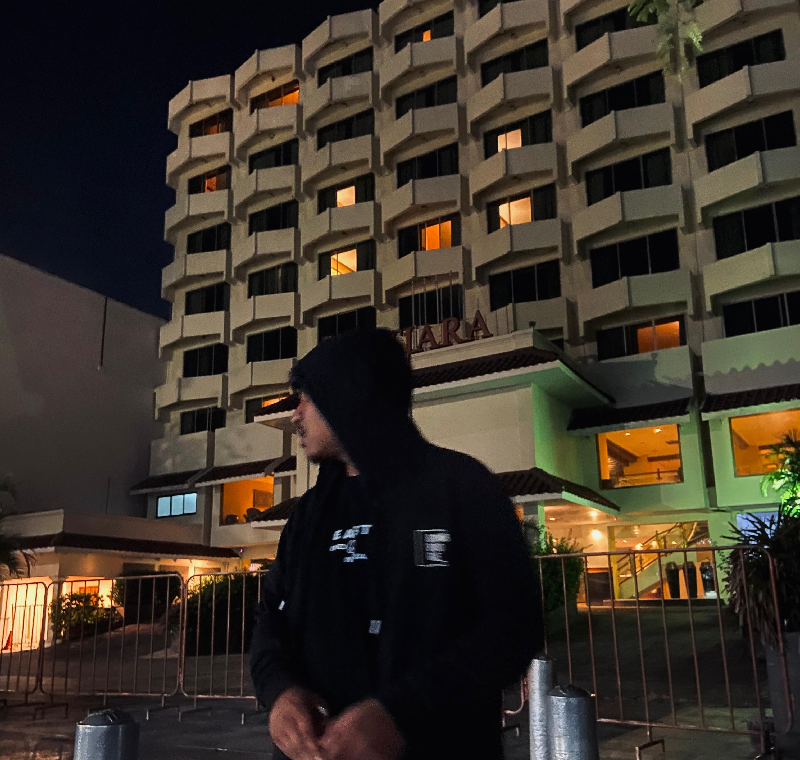
01 / WHO I AM
Latar belakang singkat dan kemampuan yang menjadi fondasi cara saya merancang serta mengembangkan produk digital.
Flutter, HTML, CSS, JavaScript, Flask, REST API, dan integrasi aplikasi end-to-end.
Menyusun alur, komponen, prototipe, responsive layout, dan visual interface yang konsisten.
Branding, poster, materi presentasi, aset promosi, dan eksplorasi komposisi visual.
"Kebahagiaan hidupmu bergantung pada kualitas pikiranmu; karena itu, jagalah pikiranmu agar tidak dipenuhi gagasan yang bertentangan dengan kebajikan dan akal sehat." — Marcus Aurelius
02 / THE STORY
Mahasiswa Informatika yang berfokus pada pengembangan web dan mobile, dengan perhatian kuat pada visual, interaksi, dan kebutuhan pengguna.
Saya menikmati proses mengubah masalah menjadi alur yang lebih sederhana: mulai dari merancang tampilan, membangun backend dan database, menghubungkan API, hingga melakukan deployment pada server. Proses panjang tersebut mengajarkan saya untuk teliti, adaptif, dan terus memperbaiki hasil.
“Dari Ambon sampe Yogyakarta, setiap proses bukang cuma cobaan, tapi kesempatan par katong berkembang deng jadi lebe bae.” — Jhalopax


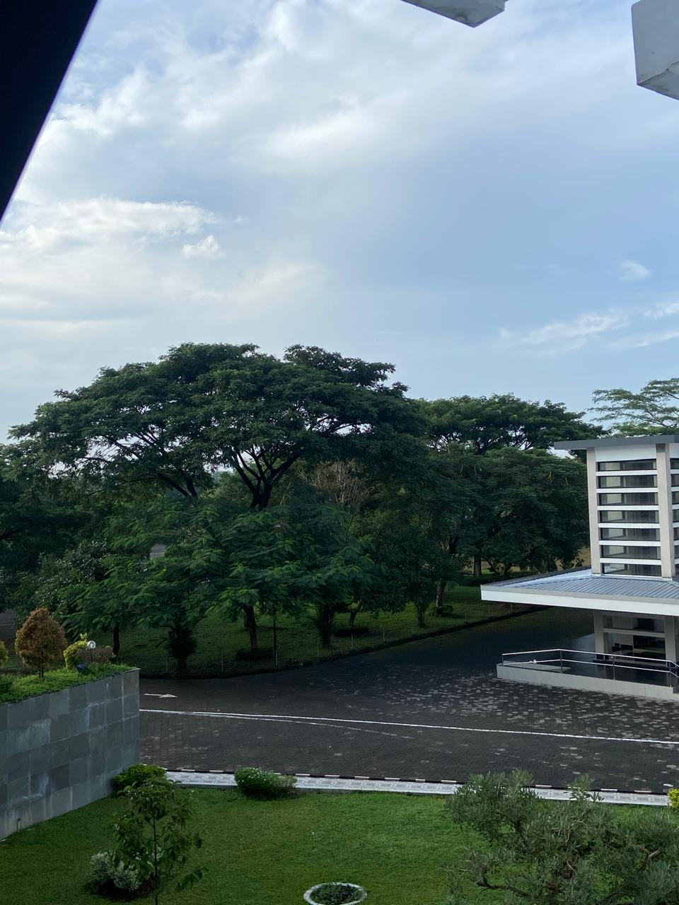

“ Jangan meremehkan keajaiban, keajaiban hanya terjadi pada mereka yang tak pernah menyerah. — Emporio Ivankov
03 / SELECTED WORK
Setiap project diringkas dalam satu card. Tekan bagian preview untuk membuka seluruh dokumentasi gambar dan penjelasannya.
Aplikasi jual-beli barang baru dan bekas dengan transaksi multi-item, varian produk, favorit, chat, bukti pembayaran, dan rencana notifikasi WhatsApp.
Project ini dirancang untuk membantu pengguna menjual dan membeli produk melalui aplikasi mobile. Sistem menghubungkan alur pembeli, penjual, dan admin mulai dari katalog, detail produk, pembayaran, verifikasi transaksi, sampai pencairan dana.
Menghasilkan pengalaman transaksi yang jelas, aman, dan mudah diikuti, sekaligus menjadi fondasi pengembangan tugas akhir.


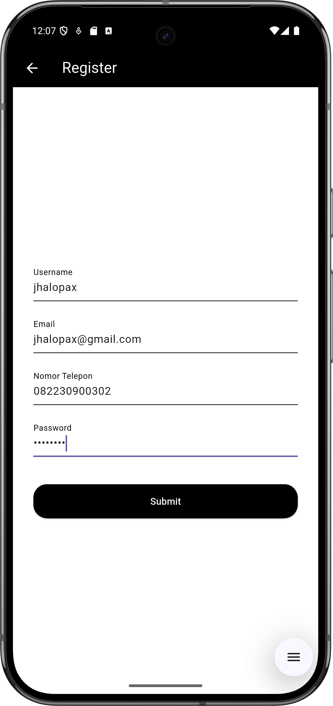
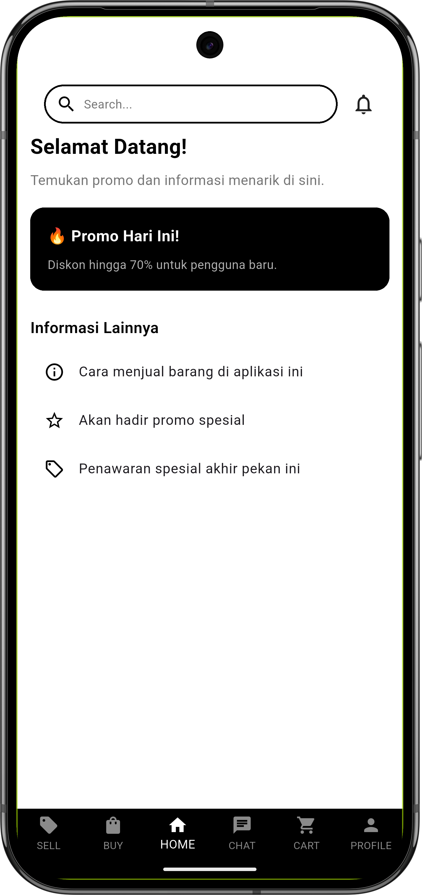


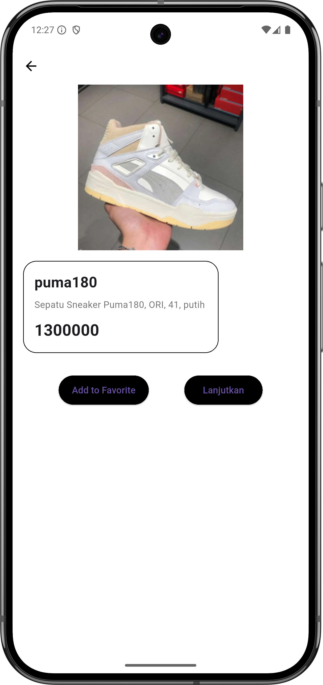
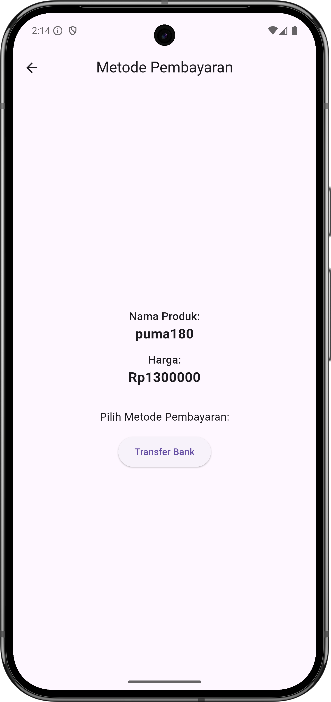


Sistem Informasi Kehadiran Akademik dan Layanan untuk menghubungkan admin, guru, murid, serta orang tua dalam satu aplikasi sekolah.
SI-KAPAL membantu pengelolaan akun, kelas, mata pelajaran, jadwal, kehadiran, nilai, laporan mengajar, monitoring, pengaduan, kuisioner, serta informasi akademik berdasarkan hak akses tiap pengguna.
Menyederhanakan administrasi akademik, mempercepat pelaporan, dan memberi akses informasi yang terstruktur bagi sekolah, guru, murid, serta orang tua/wali.
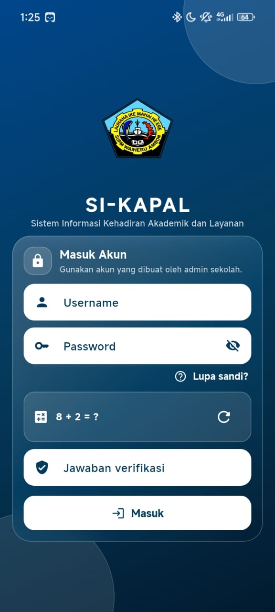
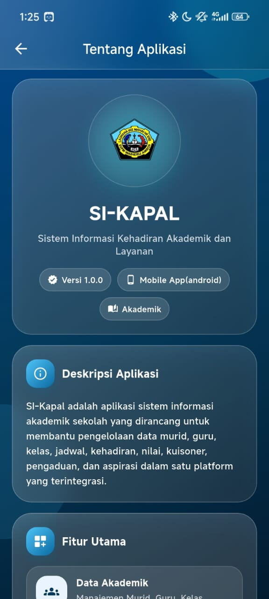
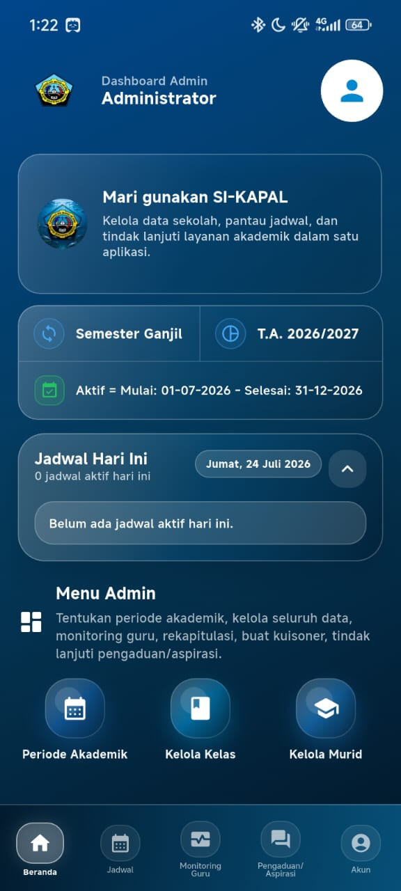
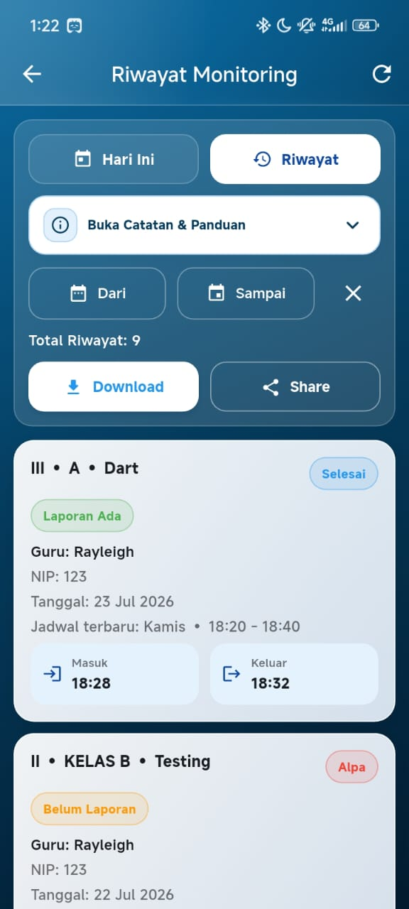
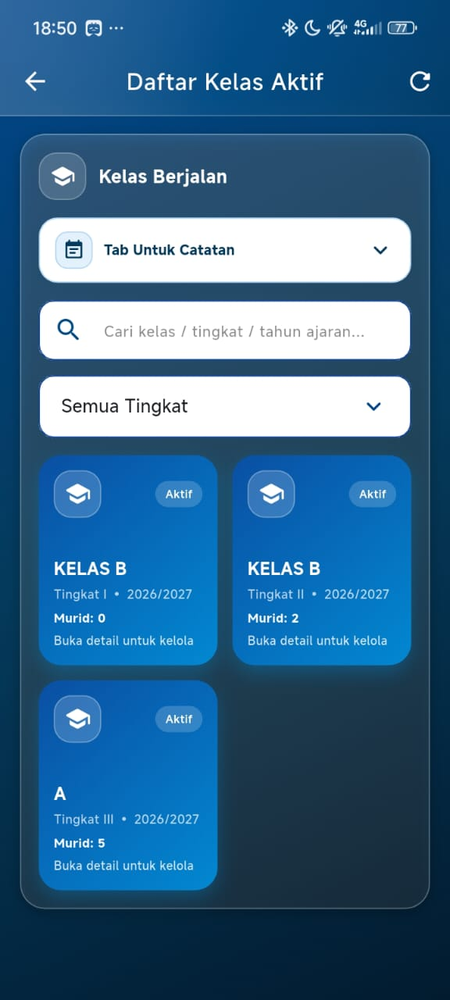
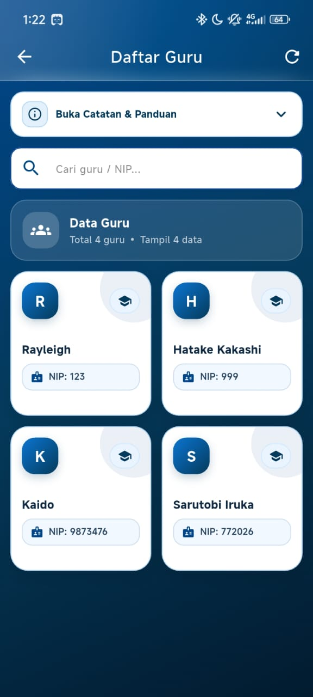
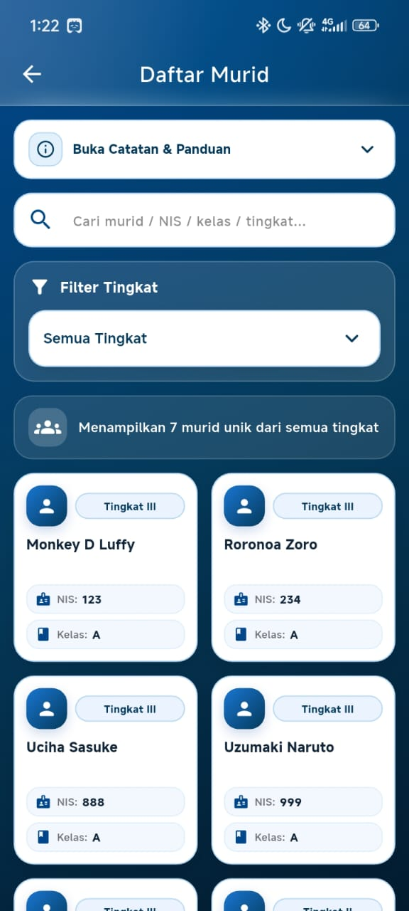
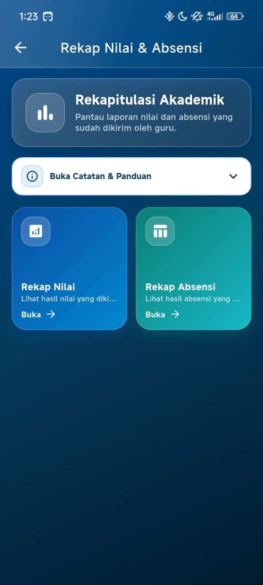
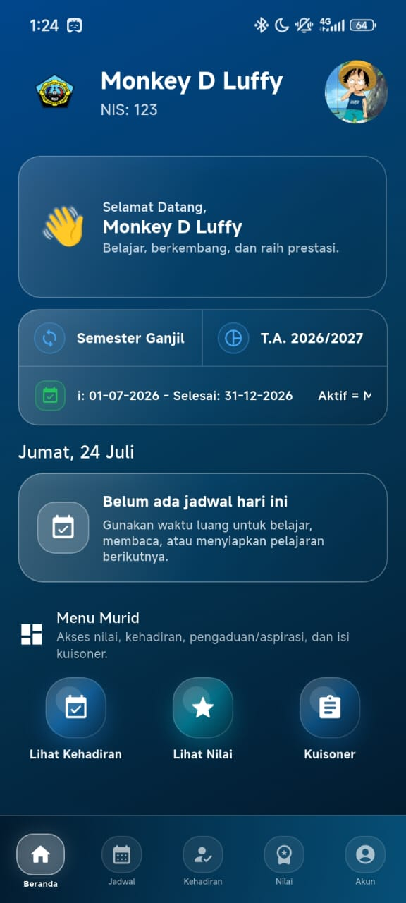
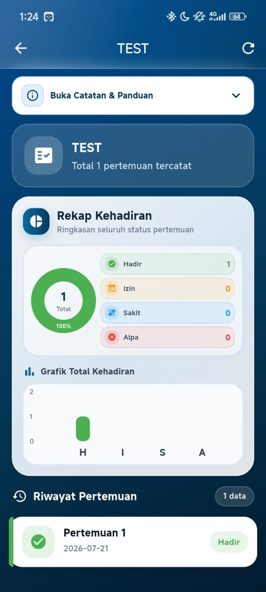
04 / PERSONAL ARCHIVE
Potongan perjalanan, tempat, dan orang-orang yang saling berbagi pengalaman selama hidup dan belajar di Yogyakarta.


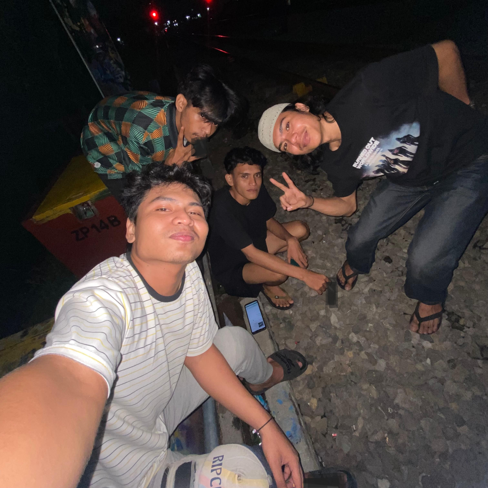
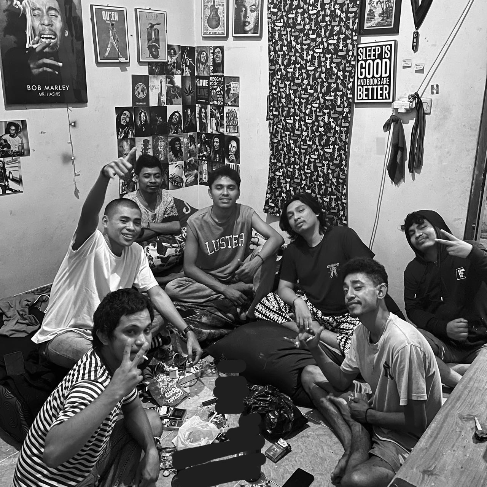
“ Tidak ada seorangpun yang lahir di dunia untuk hidup sendirian. — Jaguar D. Saul
05 / LET'S CONNECT
Terbuka untuk diskusi project web, aplikasi mobile, UI, desain visual, kolaborasi, dan peluang belajar baru.